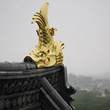
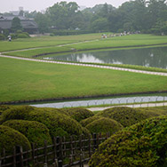
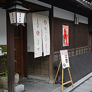
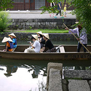

まち歩きに最適なスポットをご紹介します。

岡山城
川面に映える漆黒のようすから、金烏城（きんうじょう）と呼ばれる。

後楽園
言わずと知れた日本三大名園のひとつ。四季折々の様変わりも魅力。
大原美術館
倉敷地区の中にひっそりとたたずむ美術館。個人美術館として1930年代に開館。

倉敷（1）美観地区
かつて徳川幕府の直轄領として栄えた商人町。蔵屋敷がならぶ佇まいは江戸時代にタイムスリップ。

倉敷（2）川下り
倉敷の美観地区の川を11kmほど下る川下り。 倉敷川の両側には柳並木が続く。